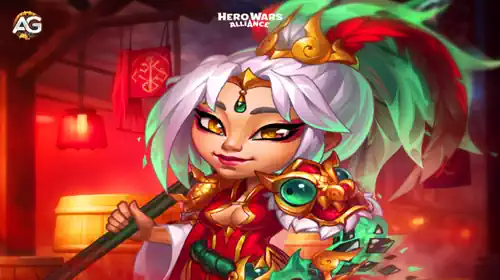

Seja você um jogador experiente ou esteja apenas começando, entender a reformulação de Qing Mao é crucial para montar uma equipe imbatível. Vamos mergulhar nos detalhes de suas habilidades atualizadas, comparações antes e depois, e como essas mudanças elevam seu papel nas batalhas.
Qing Mao, uma feroz guerreira da facção Caminho da Honra, passou por uma reformulação significativa em Hero Wars Alliance. Com habilidades aprimoradas e sinergias melhoradas, ela agora está melhor preparada para enfrentar os inimigos mais difíceis e liderar seus aliados rumo à vitória.

Qing Mao sempre foi uma valiosa aliada no campo de batalha, mas suas atualizações recentes a transformaram em uma verdadeira potência. Suas habilidades reformuladas agora se concentram em maximizar o dano, melhorar a sobrevivência e criar fortes sinergias com outros heróis do Caminho da Honra. Essas mudanças a tornam uma adversária formidável contra Tanques e inimigos da linha de frente, além de um suporte crucial para sua equipe.
Com a nova reformulação, Qing Mao não é mais apenas uma atacante; ela é uma guerreira versátil que pode destruir defesas inimigas, roubar armadura e melhorar significativamente o desempenho de seus aliados. Isso faz dela uma adição indispensável ao seu elenco, especialmente quando combinada com heróis como Tristan, Fafnir, Soleil e Luther.
A base do poder de Qing Mao está em suas habilidades. Vamos analisar cada habilidade, comparar as versões antes e depois da reformulação e entender as melhorias.
Impacto da Mudança: O novo Qing Long causa dano explosivo mais alto e aplica efeitos de queimadura muito mais fortes. Isso permite que ela derreta Tanques e inimigos da linha de frente de forma mais eficaz, especialmente quando combinada com outros heróis que exploram redução de armadura ou sinergias baseadas em fogo.
Impacto da Mudança: Com um efeito de Cegueira mais forte e duradouro, Qing Mao agora pode atrapalhar as linhas inimigas com mais eficiência. Isso a torna valiosa em composições de equipe que dependem de controlar os heróis DPS (Dano por Segundo) inimigos.
Impacto da Mudança: A reformulada Garra do Dragão dá a Qing Mao um potencial explosivo maior, especialmente contra Tanques e inimigos fortemente armados. Embora a mecânica de escala adicione complexidade, o aumento geral do dano compensa as desvantagens.
Qing Mao reduzia a Armadura do alvo com cada ataque, criando um efeito cumulativo que durava até a morte do alvo ou o fim da batalha.
Agora, Qing Mao não apenas reduz a Armadura do alvo, mas também a rouba para si e para seus aliados. A quantidade de Armadura roubada aumenta se outros Heróis de Honra estiverem presentes na equipe.
Impacto da Mudança: Esta reformulação transforma Coração Aberto em uma habilidade de suporte revolucionária. Ao reduzir as defesas inimigas e melhorar a sobrevivência de sua equipe, Qing Mao amplifica o dano de seus aliados enquanto enfraquece seus oponentes.
A reformulação também aprimora a sinergia de Qing Mao com outros heróis do Caminho da Honra, criando oportunidades para composições estratégicas de equipe. Veja como ela se combina com os principais heróis de Honra:
Tristan se destaca na Penetração de Armadura e concede bônus de Armadura aos aliados através de seu artefato de arma. Combinado com Qing Mao, a Penetração de Armadura de Tristan se encaixa perfeitamente com sua habilidade de roubo de Armadura, garantindo que os inimigos sucumbam ao dano físico incessante.
Soleil aplica a Maldição do Deus Antigo, roubando Armadura e Defesa Mágica do inimigo mais próximo e distribuindo-a entre os aliados. Juntos, Soleil e Qing Mao ampliam a sobrevivência de toda a equipe enquanto maximizam o dano.
Fafnir fornece escudos e aumentos de Ataque Físico aos aliados, enquanto sua habilidade passiva atordoa inimigos que sofrem ataques de Penetração de Armadura. Quando Qing Mao está na equipe, a sinergia de Fafnir com sua redução de Armadura cria combinações devastadoras de controle de multidão.
A habilidade de Luther de saltar para a retaguarda inimiga desorganiza o posicionamento adversário, permitindo que Qing Mao foque em causar dano ininterrupto. Essa combinação funciona especialmente bem contra heróis vulneráveis da retaguarda.
Com suas habilidades reformuladas, Qing Mao agora é uma destruidora de Tanques. O dano aprimorado de Garra do Dragão e os efeitos de roubo de Armadura de Coração Aberto fazem dela um pesadelo para inimigos fortemente armados na linha de frente.
O efeito de Cegueira melhorado de Lança do Amanhecer permite que Qing Mao interrompa os heróis DPS inimigos com eficácia. Além disso, sua sinergia com as habilidades de atordoamento de Fafnir adiciona uma camada de controle de multidão que pode mudar o rumo da batalha.
Ao roubar Armadura e redistribuí-la entre os aliados, Qing Mao desempenha um papel de suporte que complementa seu potencial ofensivo. Essa funcionalidade dupla a torna uma adição valiosa tanto para composições defensivas quanto ofensivas.
Com sua capacidade de ignorar altos níveis de Armadura, Qing Mao é uma excelente contraposição aos Tanques e heróis de linha de frente do meta atual. Quando combinada com Tristan e Soleil, ela se torna uma heroína que define o meta no estado atual do jogo.
A reformulação não apenas tornou Qing Mao mais forte, mas também a elevou ao status de escolha obrigatória em muitas composições de equipe. Sua versatilidade, aumento no dano e sinergia com heróis do Caminho da Honra garantem sua relevância tanto no PvP (Jogador contra Jogador) quanto no PvE (Jogador contra Ambiente). Para jogadores que buscam um equilíbrio entre ofensiva e suporte, Qing Mao agora é um recurso insubstituível.
A reformulação se concentra em aumentar seu dano, adicionar mecânicas de roubo de Armadura e melhorar sua sinergia com outros heróis do Caminho da Honra.
Suas habilidades reformuladas, especialmente Coração Aberto e Garra do Dragão, permitem que ela reduza e roube Armadura, causando danos massivos a inimigos fortemente armados.
Tristan, Soleil, Fafnir e Luther são escolhas excelentes devido às suas sinergias com a redução de Armadura e capacidades de dano físico de Qing Mao.
Sim, sua reformulação a torna uma forte competidora em batalhas PvP, especialmente contra Tanques do meta e equipes com alta Armadura.
Embora ela tenha melhor desempenho com heróis de Honra, suas habilidades reformuladas garantem que ela seja eficaz em qualquer composição de equipe.
Focar em artefatos que aumentem o Ataque Físico e a Penetração de Armadura maximizará seu potencial de dano.
A reformulação de Qing Mao a transformou em uma força imparável no campo de batalha, capaz de destruir as defesas inimigas e impulsionar o desempenho de sua equipe. Com habilidades mais fortes, sinergias aprimoradas e maior utilidade, ela agora é uma heroína essencial tanto para novatos quanto para veteranos em Hero Wars. Monte sua equipe do Caminho da Honra e veja Qing Mao dominar o campo de batalha como nunca antes.
Você gostou do nosso Guia da Qing Mao Rework? Há algo que não entendeu ou gostaria de sugerir mudanças? Convidamos você a se juntar à nossa sessão de comentários na página do Alexandre Games Blog. Não hesite em expressar sua opinião, clarificar suas dúvidas e compartilhar sua sugestões.
Clique no botão abaixo para começar:
 Tier List Hero Wars JvJ
Tier List Hero Wars JvJ  Como Derrotar Cada Herói - Hero Wars
Como Derrotar Cada Herói - Hero Wars